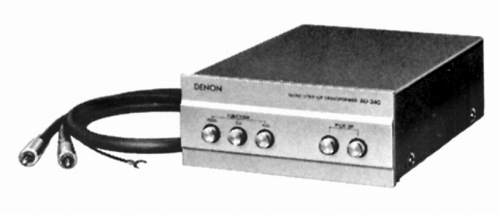
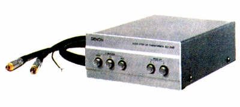

AU-340


■価格 46,000円■MC型カートリッジ用昇圧トランス■１次インピーダンス 3・40Ω切替■２次インピーダンス 4kΩ■昇圧比 1：10■周波数帯域 10-120,000Hz+0.5dB -1.0dB■位相特性 ■重量 2.1kg■寸法 W15.5×H7.0×D21.5cm■発売 1978年11月■販売終了 1985年頃■備考 入力２系統切替可能価格は1978年頃のものバイパス可能
DENONのインデックスヘ